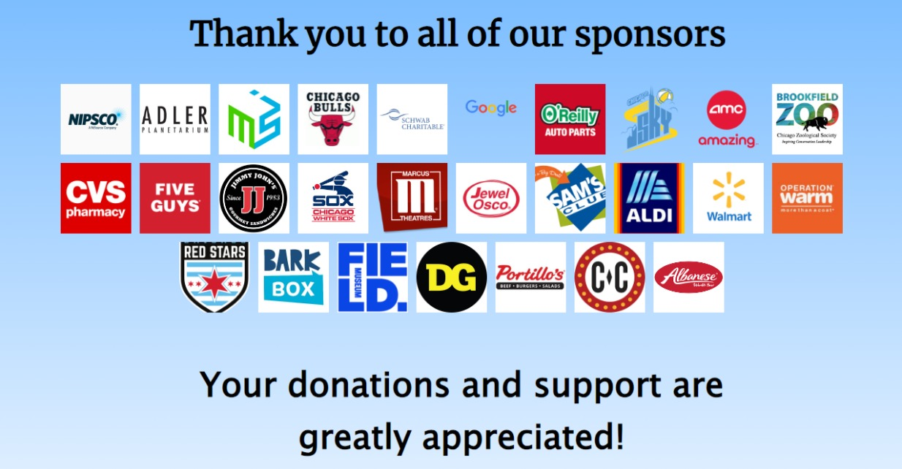

In 2016, Taylor Services Youth Organization (TSYO) recognized the serious community threat of the challenges and dangers children could face in an urban neighborhood and became dedicated to making a significant contribution to the solution. The TSYO members established the After School & Tutoring Program to provide local afflicted and economically disadvantaged youth an environment in which they can participate in productive and educational activities. Today, in order to continue to meet young people’s changing needs, Taylor Services Youth Organization has grown and evolved. With a focus on inclusiveness and diversity, one of our major goals is to support working families at all income levels with high-quality enrichment programs. Taylor Services Youth Organization draws young people aged 5-14 and offers them, their families and caretakers, a broad array of options that include after-school program, tutoring program, full-day summer camp, educational workshops and community service projects.
